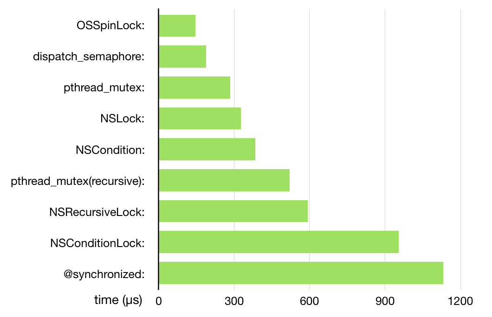

深入理解 iOS 开发中的锁
摘要
本文要做的就是简单的分析 iOS 开发中常见的几种锁如何实现，以及优缺点是什么，为什么会有性能上的差距，最终会简单的介绍锁的底层实现原理加解锁速度不表示锁的效率，只表示加解锁操作在执行时的复杂程度
OSSpinLock
不安全，可能发生优先级反转，高优先级线程忙等
自旋锁的实现原理
bool lock = false; // 一开始没有锁上，任何线程都可以申请锁
do {
while(lock); // 如果 lock 为 true 就一直死循环，相当于申请锁
lock = true; // 挂上锁，这样别的线程就无法获得锁
Critical section // 临界区
lock = false; // 相当于释放锁，这样别的线程可以进入临界区
Reminder section // 不需要锁保护的代码
}
但是要确保申请锁的过程是原子操作
原子操作
多处理器下原子操作由硬件提供支持
原子操作的伪代码可以表示为
bool test_and_set (bool *target) {
bool rv = *target;
*target = TRUE;
return rv;
}
自旋锁的总结
bool lock = false; // 一开始没有锁上，任何线程都可以申请锁
do {
while(test_and_set(&lock); // test_and_set 是一个原子操作
Critical section // 临界区
lock = false; // 相当于释放锁，这样别的线程可以进入临界区
Reminder section // 不需要锁保护的代码
}
如果临界区执行时间过长，就不适合使用自旋锁了，因为此时忙等时间长，白白浪费CPU时间
信号量
信号量最重会调用sem_wait函数
int sem_wait (sem_t *sem) {
int *futex = (int *) sem;
if (atomic_decrement_if_positive (futex) > 0)
return 0;
int err = lll_futex_wait (futex, 0);
return -1;
)
需要等待时调用lll_futex_wait，其内部调用到SYS_futex，使线程休眠让出时间片，该函数在互斥锁中也有可能被用到
主动让出时间片会导致操作系统喜欢到另一个线程，通常10微秒。如果等待时间只是几微秒，忙等更高效
pthread_mutex
互斥锁的实现原理与信号量非常类似，不是忙等，而是阻塞线程并睡眠，需要上下文切换
互斥锁的常见用法：
pthread_mutexattr_t attr;
pthread_mutexattr_init(&attr);
pthread_mutexattr_settype(&attr, PTHREAD_MUTEX_NORMAL); // 定义锁的属性
pthread_mutex_t mutex;
pthread_mutex_init(&mutex, &attr) // 创建锁
pthread_mutex_lock(&mutex); // 申请锁
// 临界区
pthread_mutex_unlock(&mutex); // 释放锁
锁的类型有PTHREAD_MUTEX_NORMAL、PTHREAD_MUTEX_ERRORCHECK、PTHREAD_MUTEX_RECURSIVE
锁定的情况下再次申请锁会导致死锁，此时应该使用递归锁
NSLock
NSLock只是内部封装了一个pthread_mutex，属性为PTHREAD_MUTEX_ERRORCHECK
它比pthread_mutex是因为需要错误提示和方法调用
NSCondition
NSCondition底层通过条件变量pthread_cond_t来实现的，它提供了线程阻塞与信号量机制
如何使用条件变量
它需要与互斥锁配合使用:
void consumer () { // 消费者
pthread_mutex_lock(&mutex);
while (data == NULL) {
pthread_cond_wait(&condition_variable_signal, &mutex); // 等待数据
}
// --- 有新的数据，以下代码负责处理 ↓↓↓↓↓↓
// temp = data;
// --- 有新的数据，以上代码负责处理 ↑↑↑↑↑↑
pthread_mutex_unlock(&mutex);
}
void producer () {
pthread_mutex_lock(&mutex);
// 生产数据
pthread_cond_signal(&condition_variable_signal); // 发出信号给消费者，告诉他们有了新的数据
pthread_mutex_unlock(&mutex);
}
使用互斥锁是为了保证temp = data;是线程安全的
wait 方法除了会被 signal 方法唤醒，有时还会被虚假唤醒，所以需要这里 while 循环中的判断来做二次确认
为什么要使用条件变量
pthread_cond_wait 方法的本质是锁的转移，消费者放弃锁，然后生产者获得锁，同理，pthread_cond_signal 则是一个锁从生产者到消费者转移的过程
互斥锁不能保证这一操作的原子性
使用信号量不需要满足先后顺序
信号量可以通过pthread_cond_broadcast方法通知所有等待中的消费者
NSCondition 的做法
NSCondition封装了互斥锁
// 其实这个函数是通过宏来定义的，展开后就是这样
- (void) lock {
int err = pthread_mutex_lock(&_mutex);
}
和条件变量
- (void) signal {
pthread_cond_signal(&_condition);
}
NSRecursiveLock
通过pthread_mutex_lock来实现，类型为PTHREAD_MUTEX_RECURSIVE
NSConditionLock
NSConditionLock 借助 NSCondition 来实现，本质是生产者-消费者模型
初始化：
// 简化版代码
- (id) initWithCondition: (NSInteger)value {
if (nil != (self = [super init])) {
_condition = [NSCondition new]
_condition_value = value;
}
return self;
}
消费者方法：
- (void) lockWhenCondition: (NSInteger)value {
[_condition lock];
while (value != _condition_value) {
[_condition wait];
}
}
生产者方法：
- (void) unlockWithCondition: (NSInteger)value {
_condition_value = value;
[_condition broadcast];
[_condition unlock];
}
@synchronized
这其实是一个 OC 层面的锁， 主要是通过牺牲性能换来语法上的简洁与可读
通过传递进来的对象的哈希值获取互斥锁数组中的互斥锁